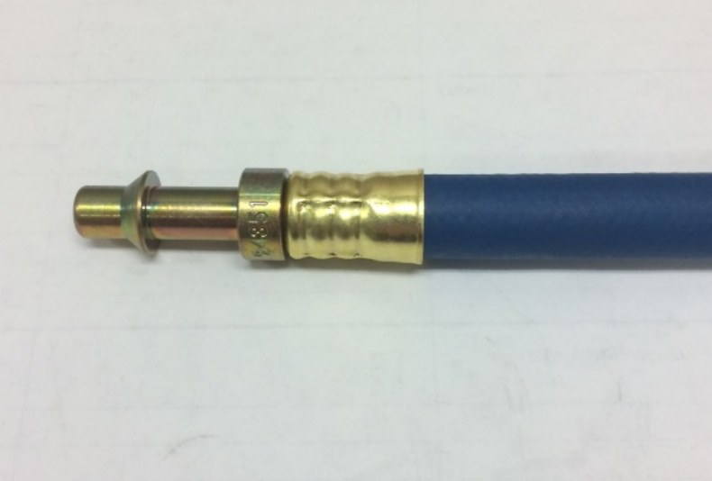
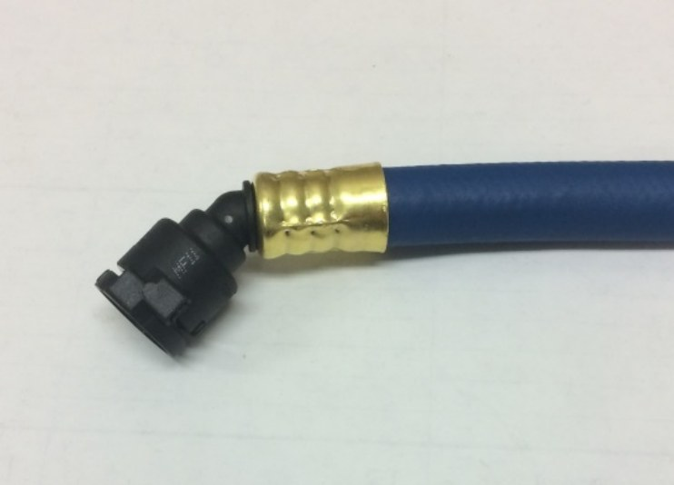

Doc no. MOC-TSB-15-05 // Vol. 15 No. 05 // Jan 25, 2015 // Cooling
Coolant Adapters for BMW E92, F01, F02 & F10
New94351
MOC has developed 2 new adapters for use when servicing the cooling systems in various BMW vehicles. This adapter set is known to fit the BMW E92 (3 Series), F01 and F02 (7 Series), and F10 (5 Series) (Part Nos. 94351 and 94352). These adapters connect at the pressurized reserve tank.
What's new
The new adapters, are available for purchase.
Contact
For more information, contact the Machine & Equipment Department at 866.244.6621.


Part numbers
| Part No. | Description | Notes |
|---|---|---|
| 94351 | Adapter, Coolant, BMW Male (F01/F02) | |
| 94352 | Adapter, Coolant, BMW Female (F01/F02) |